来源：https://icbny036uy.feishu.cn/docx/RO6TdFEv5o9PaNxVkwqcRQrfnee
哈哈，先说这篇文章绝对不是标题党哈，大道至简，互联网赚钱的方式方法多如牛毛，但是你只要做对了下面这两步，想不赚钱都难：
1.“无脑的”执行力；
2.“高维度的”思维能力。
好了，直接上干货，今天就直接把我前几天通过支付宝红包码，跑通一个最小的闭环，赚到了近3000+的现金收益（包含产品端收益），还有源源不断的长尾收益，一点点拆分了教授给大家。
授人以鱼不如授人以渔，我希望大家能通过我一整套的拆解，也能尽快跑通属于自己的闭环，赚到互联网的第一块钱。
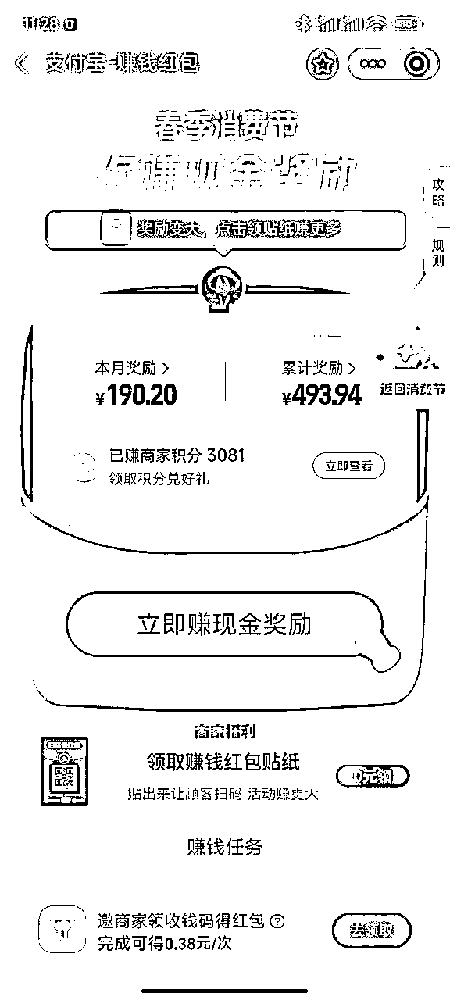
4月25早上起床，打开朋友圈，一看我去，好多人都在发支付宝红包码，我想这时候机会来了。
这时候体现了想在互联网赚到钱的话，一定要多加几个圈子里面的好友，没事多看看他们的朋友圈，看看他们都在做什么，他们发的内容就是我们的风向标。
首先，我做的是找一找有没有优质的朋友圈，可以直接模仿借鉴的（什么事情，一开始都是先模仿再创新。）我看到一个好友发的是自己的红包码+别人扫出来10几块的红包图。
我感觉很有吸引力，而且扫出来的金额都是10几块，对用户来说够吃一顿早餐了。
抓紧对标上，而且在这个过程中，我继续创新，红包码是我实拍的支付宝邮寄过来的商家码，而且话术更新升级了，用了“发红包啦”，“压箱底”，“不小心”，“免费的早餐”，这些吸引人的字眼。
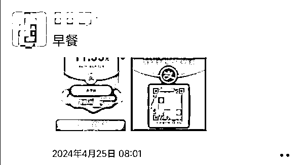
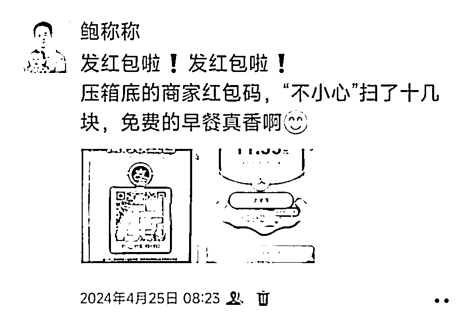
首先，实拍的红包码和其他普通的图片来比，显得不一样，而且加上话术很诱人，获得了不错的效果。
其次，过了半小时，我又跟进了一个朋友圈，话术是：又来一个14块的红包。就是告知用户，我实拍的这个码，就是和别人不一样，你不扫，你就吃大亏了。
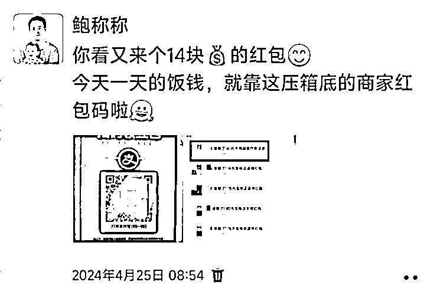
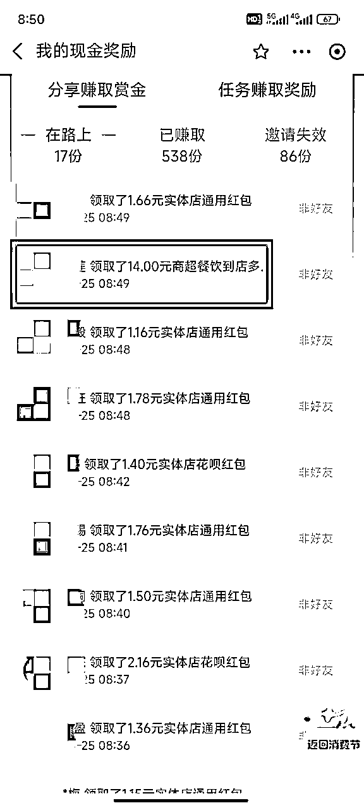
人都是有贪便宜的心理，有时候遇到犹豫不决的客户，你不知道怎么踢单，那么做优惠活动是最好的方法。
产品做优惠也得有由头的，不能是天天都做优惠，你可以是某些特殊日子做优惠，或者是某些特殊的名额做优惠，（我们之前有个交付群，用户付费才给拉进群，只要遇到快到第100位，第200位，第300位。。。我们就会去做优惠，效果都很好。）
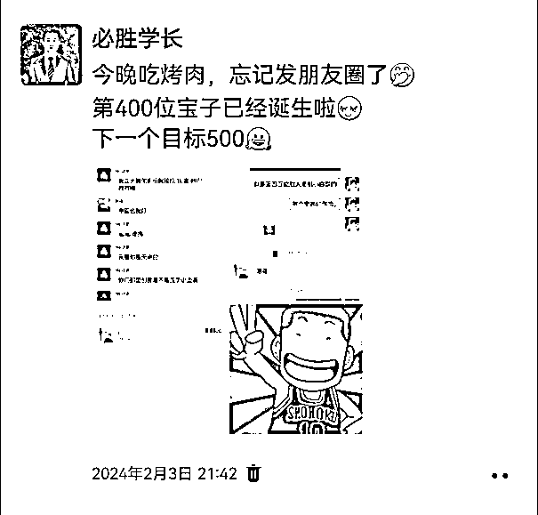
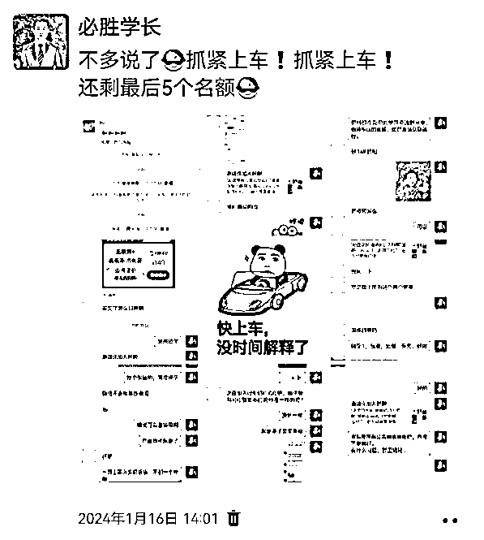
那么这次的支付宝红包码，刚好就是一个突破点，直接先发一个朋友圈，然后分标签群发。直接炸出来不少之前在犹豫的客户，还有一些直接转高客单了。
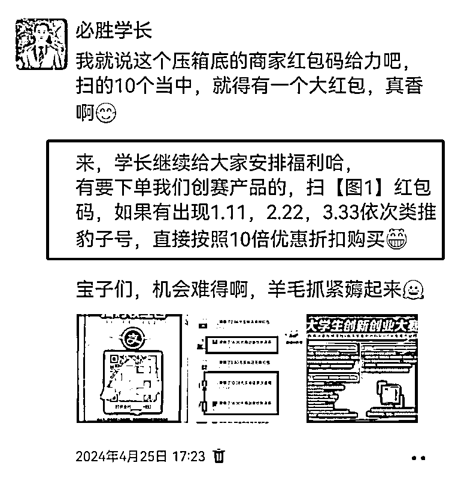
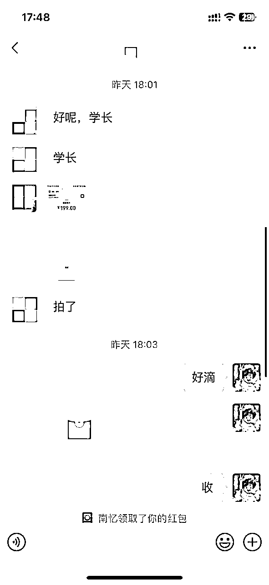
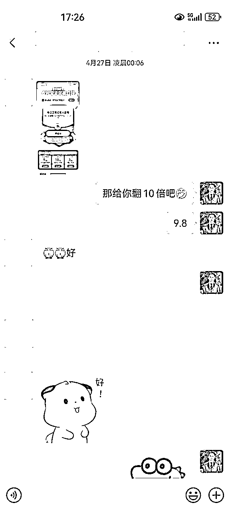
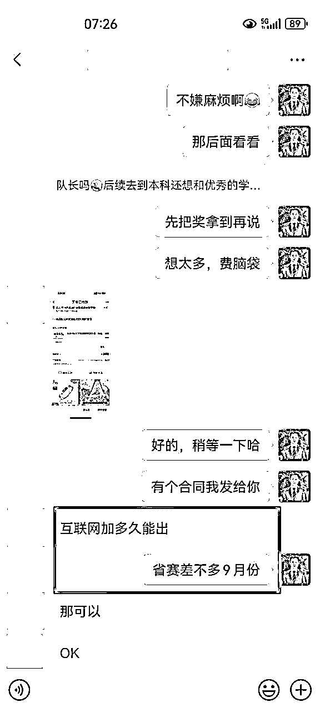
后面就是持续做朋友圈营销，加上用户付款的截图，如果真的运气不好，一个成单的都没，那就PS，或者两个小号互相发，在这就不细说了，懂得都懂。
之前看过有人用王思聪的微博做支付宝红包码营销，通过PS微博内容，然后在各大自媒体平台做曝光，赚的也不少。
我就想到也能同步下，我做的是小米的CEO雷军，因为最近小米SU7大卖，热点很高，我就做了个雷军的微博内容营销，具体如下。
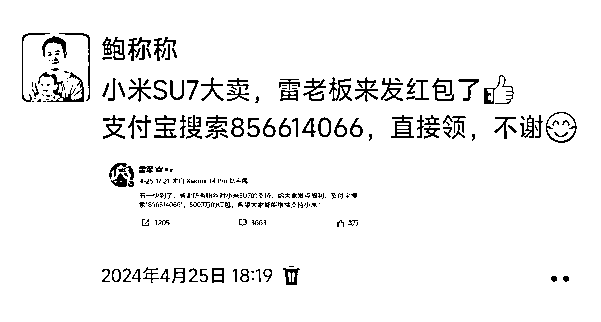
我没有时间去自媒体平台做笔记，只是在自己微信朋友圈上发了，如果同步到自媒体平台，应该效果更好。
以上，个人端的支付宝红包码玩法，就算是结束了，当然肯定还有更多的玩法，也希望圈友多多指点。
下面要讲的，就是升级的玩法，大家接着往下看。
做到这，我在想，单做这个红包码局限性太大，个人的私域流量有限，而且发的人那么多，不可能一直扫你的码，也不常久。
那我就在想怎么继续在这个项目上面获得收益，刚好我在打造个人IP，我想的是很多人都不懂得怎么在互联网赚到第一块钱。
那就教他们怎么先赚到第一块钱，直接把我玩支付宝红包码的整个流程，打包起来作为营销内容。
想到就开始执行，记得行动永远是开始的第一步，出来赚钱，你第一步就是出来。
立马开始发朋友圈营销，同时自己做的是小红书项目，想拉个小红书交流群，就设置了一个9.9的门槛费，发了没一小会，就有人付费了。
从这点说明，只要你敢于分享，敢于营销，肯定有人愿意为你付费的。
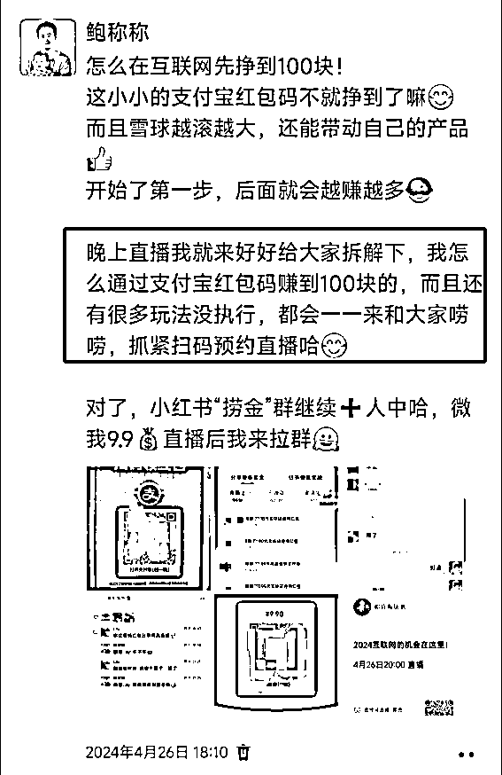
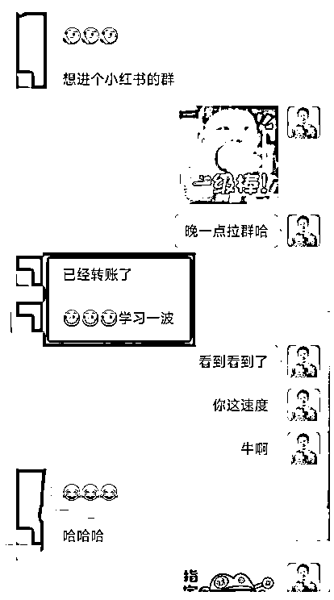
同时晚上八点，在视频号开了直播，来来回回也聊了快一小时，效果感觉还是不错的，起码也是开启了个人IP的第一步。
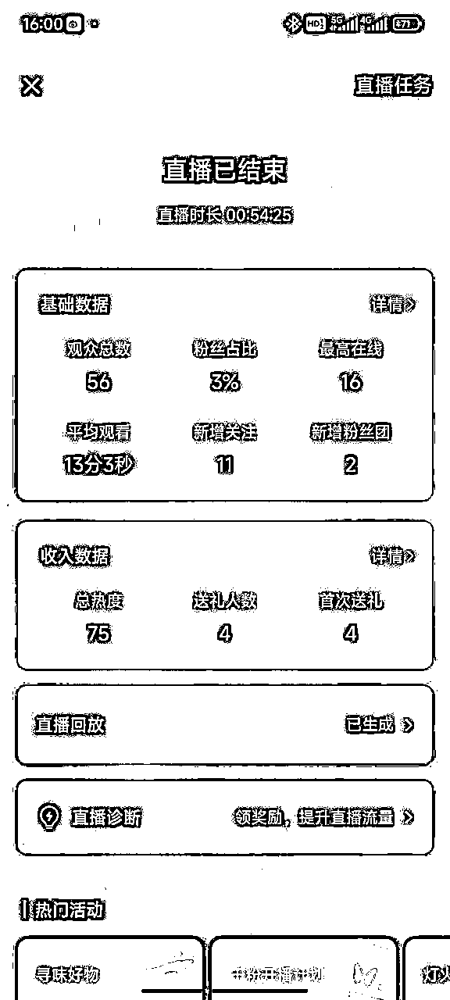
什么叫最终级手段，我觉得就是既然做到这种程度了，也拿到了一点小结果，必须得写点什么内容出来，然后同步到公众号，各类付费的社群，为了就是持续的营销自己，给自己的IP舔砖加瓦。
而且，咱们可以把这个文档的内容，做成图文或者视频的形式，各平台去分发，达到一鱼多吃的效果。后面会慢慢来执行，也欢迎大家来监督。
执行力！执行力！还是执行力！
重要的事情，要说三遍，出来赚钱，第一步要做的就是出来。
在第一时间发现有人在发支付宝红包码之后，立马下场同步执行。
很多人都直接卡在了第一步，那就永远只能看着别人赚的盆满钵满。
对标其他人的朋友圈之后，持续迭代优化，让自己的朋友圈文案更有特色，更有吸引力。
而且，不仅仅局限于自己的私域，还想去公域平台获得额外的收益。
不限制于只通过红包码来带来收益，通过红包码优惠，迭代出营销优惠，激发了客户的购买力，带来了额外的收益；
做的过程中就想到了，后续可以打包这个项目来作为营销内容，打造个人IP，同时开通直播，用直播的形式直接拉近与用户之间的距离。
这个高纬度的思考，就像是开了上帝之眼，从终局来思考问题，就不会走弯路，每一步都是按照计划来进行。
在发现支付宝红包玩法的时候，因为精力有限，没有第一时间在流量更大的公域平台去获取流量。
其实，社群里面已经有圈友早在4月25号之前就告知支付宝红包会增加赏金，但是自己平时都不怎么看社群，这就导致没有更多的时间去准备。
通过这次，我现在养成了没事就刷刷社群风向标的习惯。
一个人的精力永远都是有限的，可触达的人群也是有限的，没有尝试去做一些可裂变的玩法，希望后续可以增加一些裂变的玩法，增加触达的人群。
这次直播只尝试了视频号的直播，只在个人私域的小圈子里面。没有尝试在一些大的平台去直播，下次可以考虑去更多的平台去直播，去做曝光。
我是称称，89年的互联网老兵，一位二胎全职奶爸，河狸创赛教练，持续学习创业中。
现主攻小红书大学生创赛赛道，有个小的工作室，现有1w+大学生私域粉。
一个人能走的很快，一群人能走的更远。
在称称的地盘，我俩“称兄道弟”，一起“称心如意”。